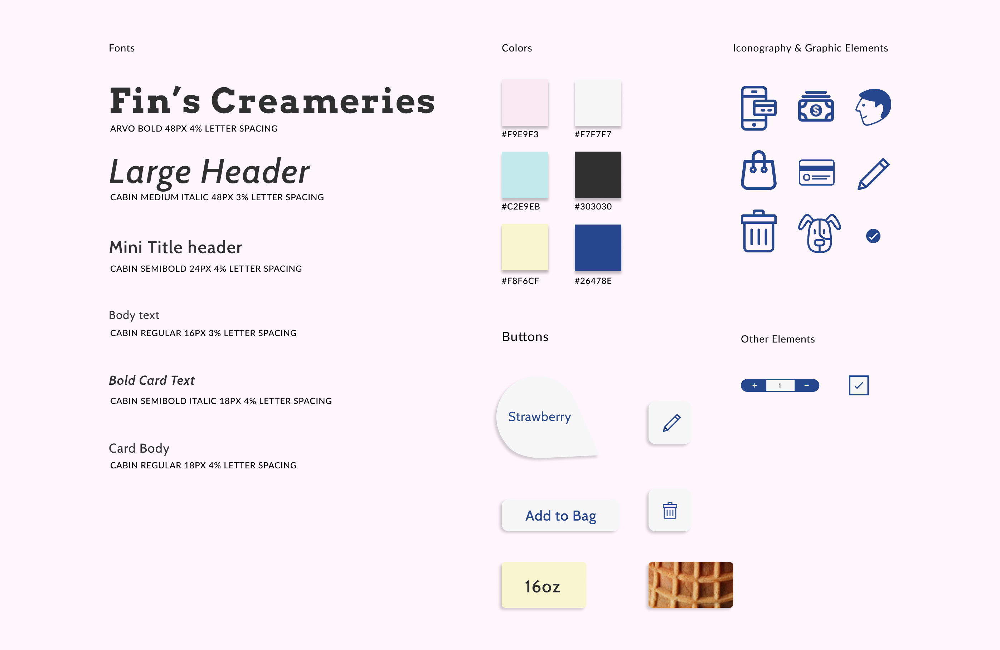

Groundwork
Our Solution
A soft serve ice cream vending machine that will dispense customizable creameries for everyone, including for their pets. We wants to allow these users to have a place where they could go support their love for their pets while they are on the go.
Project Goals
We focused mostly on the interactive process of how to use the vending machine, the steps taken to ordering an ice cream for themselves and their pet.
Visually Attractive
The design of the UI matches the integration of pets and people with ice cream. Its a cute idea and should be designed accordingly.
Easy-to-Follow
The users will be able to follow through and customize their ice cream while they are on the go!
Inspiration Board
Our design approach was mostly inspired off these colors to make our designs look and seem cute. We wanted the product to seem fun and overall friendly to other people.

Style Guide
We believe this style guide captures the idea of making the design cute due to the light color, and typography and as well as the rounded interactive parts.
